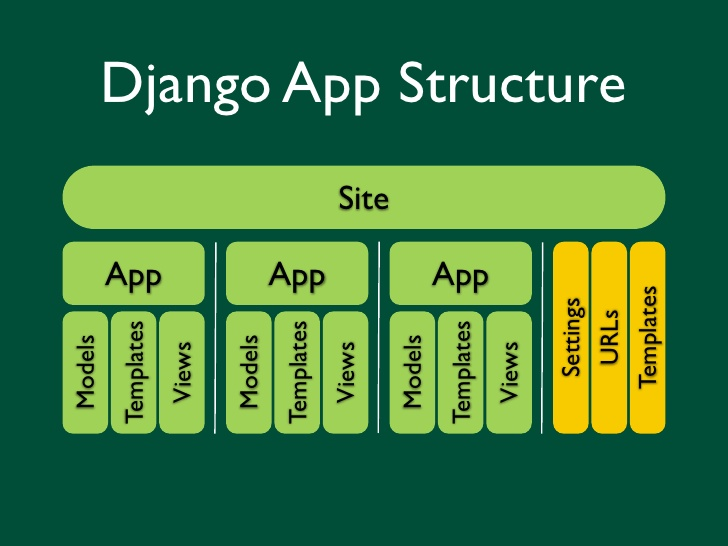
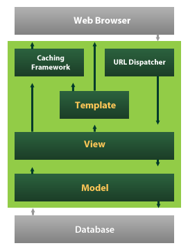
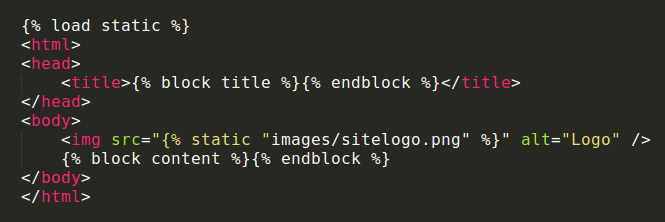
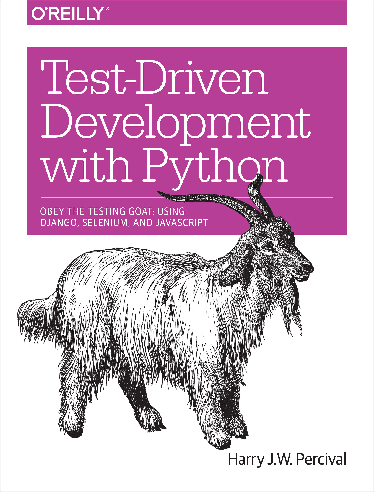

O que é o Django
- Framework web opensource escrito em Python.
- Segue o padrão
MVTMVC. - Ênfase em simplicidade e rapidez no desenvolvimento.
- Incentiva a reusabilidade (D.R.Y.)
- E sim, tem que saber Python.
Um slide sobre Python
- Linguagem de alto nível, de propósito geral, multi paradigma.
- Interpretada, fortemente e dinamicamente tipada.
- Foco na legibilidade do código com uma sintaxe concisa e clara.
- Disponibiliza muitos recursos através tanto da sua biblioteca padrão quanto por módulos e frameworks de terceiros.
- Muito utilizada para processamento de texto, dados científicos e sistemas para a web.
- Versões principais: 2.7 e 3.x
Instalando Django
# Instale o Python
~ $ sudo apt-get install python3
# Instale o pip (gerenciador de pacotes)
~ $ sudo apt-get install python3-pip
# OPCIONAL: Crie um ambiente virtual
~ $ sudo pip install virtualenv
~ $ virtualenv novo_ambiente --python=/usr/bin/python3
~ $ source novo_ambiente/bin/activate
# Finalmente, instale o Django :)
~ $ pip install djangoEstrutura das aplicações Django
Criando um projeto
# Execute o comando
~ $ django-admin startproject meuprojeto .
# Será criada a seguinte estrutura:
~
|
├─ manage.py # script de gerenciamento
└─ meuprojeto
settings.py # configurações do projeto
urls.py # lista de mapeamentos de urls
wsgi.py
__init__.py
Executando o projeto
# Dentro da pasta do projeto
~ $ python manage.py runserver

Criando uma aplicação
# Rodar no diretório do projeto
~ $ python manage.py startapp app
~ # A nova estrutura do projeto
├── manage.py
├── meuprojeto
| ... # idem ao slide anterior
└── app
├── migrations
| __init__.py
├── __init__.py
├── admin.py
├── models.py
├── tests.py
└── views.py
Fluxo de requisições
Models.py
from django.db import models
from django.utils import timezone
class Post(models.Model):
author = models.ForeignKey('auth.User')
title = models.CharField(max_length=200)
text = models.TextField()
created_date = models.DateTimeField(default=timezone.now)
published_date = models.DateTimeField(blank=True, null=True)
def publish(self):
self.published_date = timezone.now()
self.save()
def __str__(self):
return self.title
URLS.py
(Alguém disse expressões regulares?)from django.conf.urls import url
from . import views
urlpatterns = [
url(r'^articles/([0-9]{4})/$',
views.year_archive),
url(r'^articles/([0-9]{4})/([0-9]{2})/$',
views.month_archive),
url(r'^articles/([0-9]{4})/([0-9]{2})/([0-9]+)/$',
views.article_detail),
]
Views
from django.shortcuts import render
from .models import Article
def year_archive(request, year):
a_list = Article.objects.filter(pub_date__year=year)
context = {'year': year, 'article_list': a_list}
return render(request, 'news/year_archive.html', context)
Templates - fragmento
{% extends "base.html" %}
{% block title %}Articles for {{ year }}{% endblock %}
{% block content %}
Articles for {{ year }}
{% for article in article_list %}
{{ article.headline }}
By {{ article.reporter.full_name }}
Published {{ article.pub_date|date:"F j, Y" }}
{% endfor %}
{% endblock %}
Templates - base
TDD com Python e Django
Alguns "sites grandes" que utilizam Django
- Disqus
- Bitbucket
- Nasa
Fonte: Quora.com - What-are-some-well-known-sites-running-on-Django
Referências
-=[ "live long and prosper" ]=-
_
.-T | _
| | | / |
| | | / /`|
_ | | |/ / /
\`\| '.' / /
\ \`-. '--|
\ ' |
\ .` /
| |